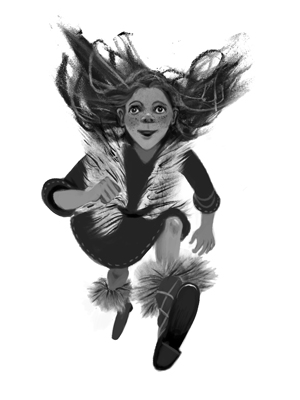
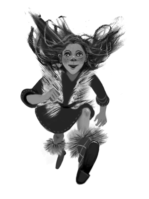
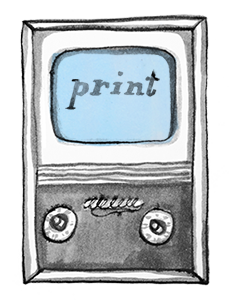
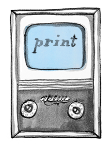

Pioneers of Tech.
From left to right: Alan Turing, Lady Ada Lovelace, Tim Berners-Lee, Charles Babbage and Grace Hopper.
")
")
")
")
")
")
 (1955-)")

London Underground


Virginia Woolf's Orlando.


Thomas Mann's Buddenbrooks
I should get rid of the black spine and transition the ripples accross to the front: cloud --> water. Also keep in mind movement from tree shadow to ripples is like an arc.


 



Mrs Eaves


 



Carmina Burana (Drypoint)

The Book of the City of Ladies by Christine de Pizan (1362-1430)


Three Wishes for Cinderella
Drei Haselnüsse für Aschenbrödel
Tři oříšky pro Popelku
(1973)
In this film version, Cinderella receives three magical haselnuts. Each contains a beautiful new outfit that will help her court the prince.


Die Fledermaus.
Johann Strauss Jr.
"Du siehst, nur der Champagner
war an allem Schuld!"


Die Zauberflöte.
Wolfgang Amadeus Mozart
"Die sternflammende Königinn sehen?
Welcher Sterbliche kann sich rühmen,
sie je gesehen zu haben?"
Der Rosenkavalier.
Richard Strauss
"Ist ein Traum, kann nicht wirklich sein
dass wir zwei beieinander sein."
Faust.
Charles Gounod
"Ah! je ris de me voir
si belle en ce miroir."